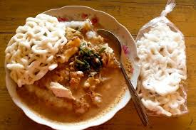

Seputar Tajhin Plappa
Tajhin Palappa
Tajin Palappa. Memang sama sih sama bubur, tapi bedanya Tajin Palappa itu lebih khas, enak maknyus sangat, dan unik. Yah seperti artinya, Tajin Palappa yang berarti bubur bumbu ini bentuknya yah bubur, dengan kuah berupa bumbu pecel tapi lebih encer daripada bumbu pecel yang biasanya lebih kental bentuknya. Nah bumbu pecel ini digunakan sebagai bumbu bubur Tajin Palappa. Selain itu hiasan khas Tajin Palappa berupa sayuran (sayuran yang sering dipake adalah sayur kangkung dan toge) serta bakwan-sejenis gorengan (Nah di Situbondo ini jenis gorengan tersebut biasa dinamakan bakwan, Hongkong, dan terem. Tapi kalo secara nasional, jenis gorengan ini dinamakanbakwan).
Saat Tajin Palappa dihidangkan, pertama-tama bubur dulu yang dimasukin ke mangkok/piring, kemudian sayuran, lalu ditirisin bumbu Palappa mirip bumbu peccel, terus ditambahin hiasan bakwan yang dipotong kecil-kecil. Jadilah Tajin Palappa yang siap dinikmati. Tapi ada juga Tajin Palappa yang disantap dengan tambahan kerupuk. Bener-bener maknyus. Hayoo yang belom nyobain Tajin Palappa mari berkunjung ke Situbondo.